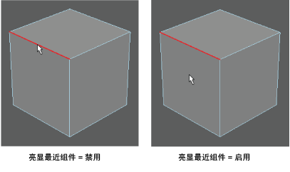

在建模工具包窗口中提供了以下选项，您可以使用这些选项在场景中选择组件：
- 拾取/框选(Pick/Marquee)
-
“框选”(Marquee)选择样式在您要选择的组件上绘制一个矩形框。拖动框选框，然后按住 Alt 键并将其拖到新位置，可以通过交互方式调整框选内容。
- 拖选(Drag)
-
“拖选”(Drag)选择样式类似于没有笔刷大小的绘制选择(Paint Selection)。此选择样式可以让您将光标拖到您要选择的组件上。
使用“拖选”(Drag)选择样式，还可以在光标不接触组件时选择组件，从而快速轻松地进行选择。默认情况下，Maya 的选择前亮显和“拖选”(Drag)选择样式将亮显离光标最近的组件。
- 调整/框选(Tweak/Marquee)
-
可用于调整组件或进行框选。当您拖动组件时，Maya 将使用“调整”(Tweak)模式。当在对象周围的空白区域拖动光标时，Maya 将使用“框选”(Marquee)工具。请参见在调整模式下移动组件。
提示： 按住 ` 键将激活调整模式，直到松开此键。按 ` 键一次将激活调整模式，直到再次按 ` 键。 - 基于摄影机的选择(Camera Based Selection)
- 启用后，无法在着色模式下选择摄影机的视点所遮挡的组件（例如，背面组件或隐藏在前景组件后面的组件）。“自动”(Auto)会在着色模式下自动激活“基于摄影机的选择”(Camera based selection)，但在线框和 X 射线模式下将其禁用。“自动”(Auto)会覆盖所有其他基于摄影机的选择设置。
- 亮显背面(Highlight Backfaces)
- 启用时，背面组件将被预先选择亮显并可供选择。禁用此选项时，背面组件仍然可选择，但不会被预先选择亮显。
- 亮显最近组件(Highlight Nearest Componen)
-
启用后，亮显距光标最近的组件，然后您可以选择它。默认情况下，在建模工具包和“选择工具”(Select Tool)设置中“亮显最近组件”(Highlight Nearest Component)处于启用状态。禁用“亮显最近组件”(Highlight Nearest Component)后，仅当光标放置在组件上方时才会亮显它们。
- 亮显背面(Highlight Backfaces)
- 启用时，背面组件将被预先选择亮显并可供选择。禁用此选项时，背面组件仍然可选择，但不会被预先选择亮显。
- 软选择(Soft Selection)
- 启用“软选择”(Soft Select)后，选定对象周围的衰减区域将获得基于衰减曲线的加权变换。如果此选项处于启用状态，并且未选择任何内容，将光标移动到多边形组件上会显示软选择预览。请参见软选择 NURBS 或多边形曲面网格。
提示： 使用 B 热键可切换软选择模式。按住 B 键拖动可以调整软选择衰减区的大小。
- 衰减模式(Falloff mode)
- 设置衰减区域的形状。
- 体积(Volume)
- 围绕选定对象延伸一个球形半径，并逐渐影响球形范围内的所有顶点。
- 曲面(Surface)
-
“衰减模式”(Falloff Mode)设置为“曲面”(Surface)时，衰减基于贴合曲面轮廓的圆形区域。希望软选择衰减与曲面一致时，曲面模式很有用。例如，可以使用基于表面的衰减模式，使角色面部的上嘴唇与下嘴唇分离。
- 全局(Global)
-
“衰减模式”(Falloff Mode)设置为“全局”(Global)时，衰减区域的确定方式与“体积”(Volume)设置相同，只是“软选择”(Soft Selection)影响物会影响“衰减半径”(Falloff Radius)中的任何网格，包括不属于原始选择的网格。
- 对象(Object)
-
“衰减模式”(Falloff Mode)设置为“对象”(Object)时，可以使用衰减平移、旋转或缩放场景中的对象，无需使对象本身变形。
- 衰减半径(Falloff radius)
- 确定变形区域。在“衰减半径”(Falloff radius)字段中输入一个值，可调整该区域。
提示： 按住 B 键拖动鼠标中键可以调整衰减区域的大小。
- 衰减曲线(Falloff curve)
- 用于修改衰减的形状。曲线形状表示选定组件周围的衰减形状。可以单击图表来添加附加点到曲线，同时可以单击并拖动现有点来更改它们的位置。
- 重置曲线(Reset Curve)
- 将所有“软选择”(Soft Selection)设置重置为其默认值。
- 对称(Symmetry)
- 启用对称。请参见对称设置(Symmetry Settings)。
提示： 在
 按钮上单击鼠标中键可在上次选定的“对称”(Symmetry)设置和“禁用”(Off)之间切换。
按钮上单击鼠标中键可在上次选定的“对称”(Symmetry)设置和“禁用”(Off)之间切换。